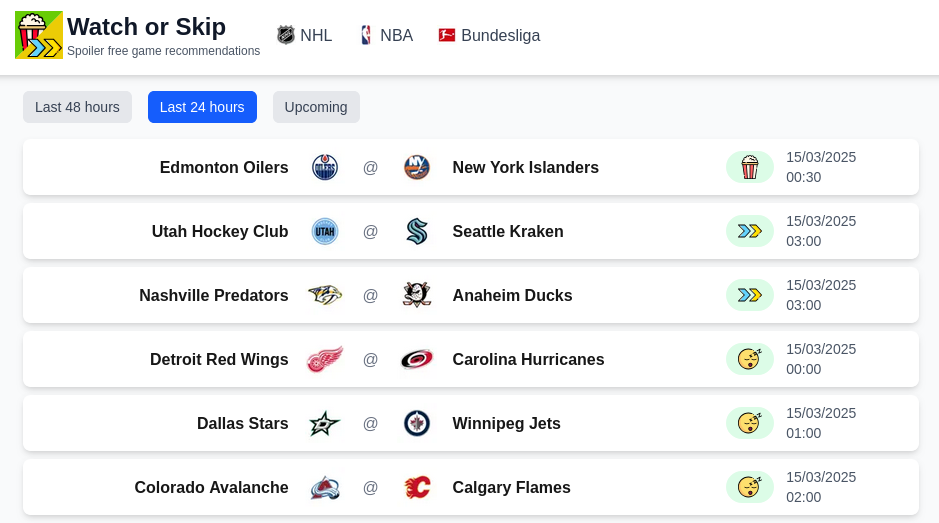

Watch or Skip
Spoiler free sports recommendations
Missed the game last night? No worries -we've got you covered. Analysing the latest NHL, NBA, and Bundesliga games and matches, Watch or Skip provides spoiler-free viewing recommendations to answer the age-old question: Is it worth my time?
Check it out at watchorskip.com or follow us on Bluesky at @watchorskip.com